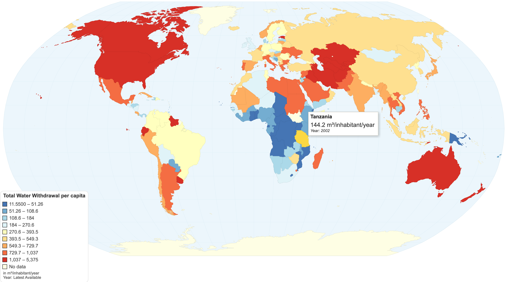
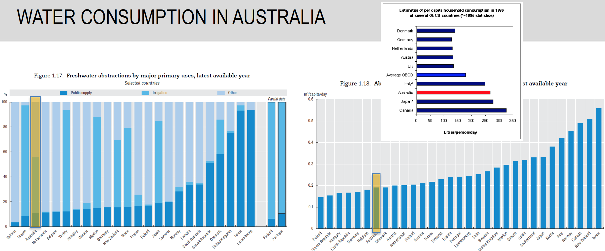
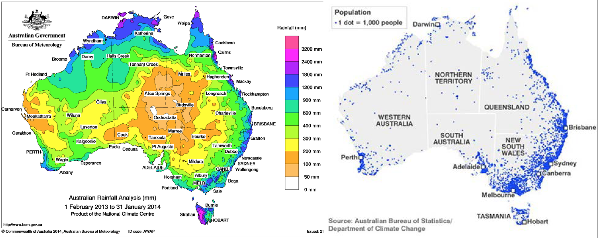
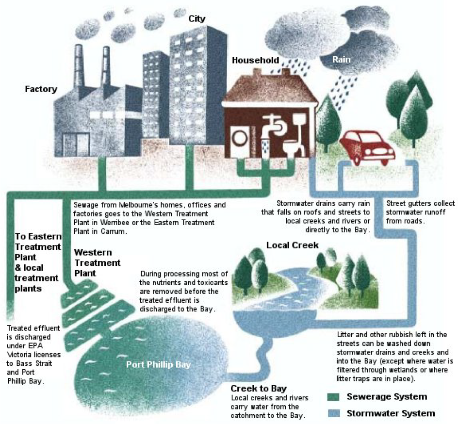

Week 1 - Introduction to Hydrology
Motivation for Hydrology
Water is probaby the most important resources we have. As hydrologists:
- We need to manage its use
- We extract water from lakes, rivers, aquifers, and oceans. We need to manage how we do this to ensure we meet a certain level
of water supply reliability, while still ensuring our ecosystem are protected. We are called upon to understand water and
constituent inflows into and out of these systems.
- We need to control its power
- We need to live with water, so we must control its power and protect us from floods and droughts.
- We need to mange its quality
- We must control the source of pollution to our receiving water bodies, to make them fit for human use and to protect our environment.
Problems of Interest to Hydrologists:
- Environment flows
- Drainage
- Water Supply
- Floods/Droughts
- Climate Variability
Definition of "Hydrology"
Definition: The study of the movement, distribution, and quality of water on Earth,
including the hydrologic cycle,
water resources and environmental watershed sustainability.
- Hydrology:
"is the science that treats the waters of the earth, their occurence,
circulation and distribution, their chemical
and physical properties, and their reaction with their environment, including their
relation to living things. The domain of hydrology
embraces the full life history of water on the earth"...
US Federcal Council for Science and Technology, 1962
Water Consumption in Australia

- Many regions (urban and rural) in Australia are facing water shortage problems.
- Water quality & pollution control is another serious problem.

- Australia is still one of the major consumers of freshwater in the developed world per capita
(in particularb ecause of mining
and agriculture)
- Urban consumption only makes up ~15% of the total consumption (public supply) these days.
- Rural consumption is around 50% of the total (irrigation)

Urban Water Management
The Three components of urban water management:
- Stormwater Systems
- Wastewater Systems
- Water Supply Systems
